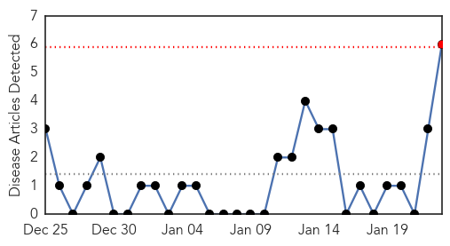
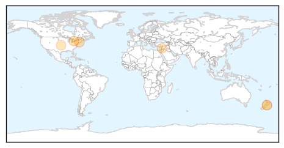
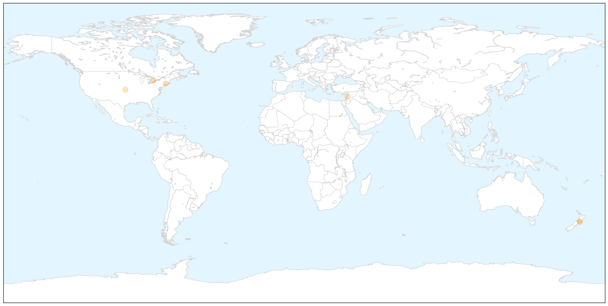
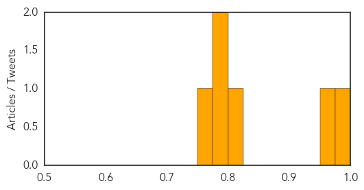
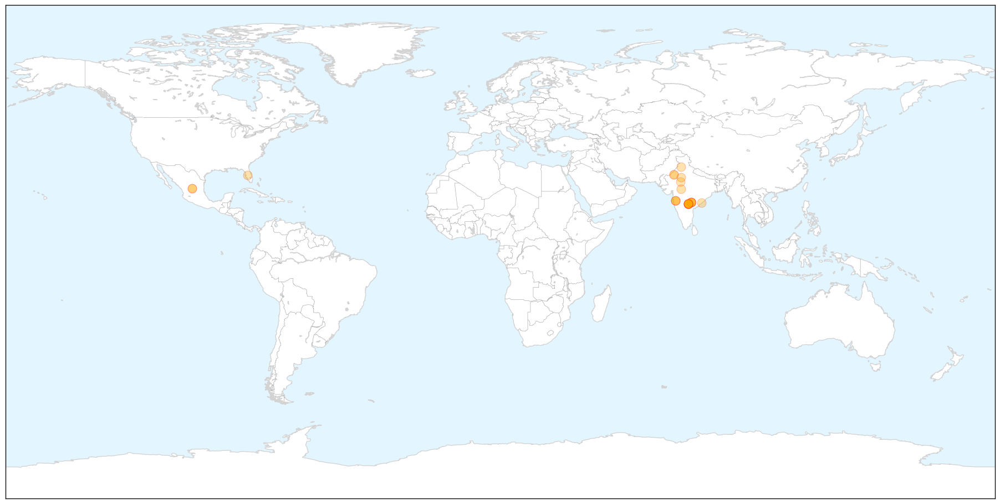

Hepatitis
30-Day Web Trend
1 alerts, 0 warnings

30-Day Twitter Trend
0 alerts, 0 warnings

Article Locations

X

Article Confidences
Top Articles:
- 0.991
- Hepatitis A warning issued in Ontario, Marj’s Village Kitchen employee tests positive
- 0.968
- What You Should Know About Chronic Lyme Disease
- 0.822
- Lebanon: RRP6 Monthly Update - December 2014: Public Health - Lebanon
- 0.786
- Impact of hepatitis A scare on popular eatery top concern as hundreds get vaccinated north of Guelph
- 0.786
- Impact of hepatitis A scare on popular eatery top concern as hundreds get vaccinated north of Guelph
- 0.759
- Second Hepatitis A vaccine clinic delayed, food handler at Alma restaurant had Hep. A
Top Tweets:
-
No tweets found for Jan 23, 2015
Swine Flu
30-Day Web Trend
7 alerts, 3 warnings

30-Day Twitter Trend
0 alerts, 0 warnings

Article Locations

X

Article Confidences

Top Articles:
- 1.000
- Swine flu haunts Maharashtra again, kills nine in January
- 1.000
- Bhopal records second swine flu death; hospitals on alert
- 0.999
- Telangana govt declares high alert on spread of swine flu, AP too rings the alarm bells
- 0.998
- Swine flu infects 29; kills 6 in state in Jan
- 0.997
- Vizag Braces for Swine Flu Battle
- 0.996
- Swine flu deaths in Jaipur put Rajasthan on high alert
- 0.991
- Swine flu toll 22 in Telangana; three doctors test positive
- 0.989
- All measures in place to tackle swine flu: NIMS Director
- 0.989
- 'No Handshake, Only Namaste' New Mantra to Curb Swine Flu
- 0.987
- State Govt Decides to Bear Cost of Swine Flu Test
- 0.987
- 2 more suspected swine flu deaths in city
- 0.984
- Sarasota schools to expand flu vaccine push
- 0.975
- Hyderabad civic body to launch swine flu awareness campaign
- 0.968
- Swine flu alert in city after Amritsar death
- 0.967
- Central team calls for better hygiene, pro-active sample testing to reduce swine flu in Telangana
- 0.965
- Central team calls for better hygiene, pro-active sample testing to reduce swine flu in Telangana
- 0.938
- House arrest for flu sufferers?
- 0.935
- Swine flu claims 3 more lives in Rajasthan, toll mounts to 18
- 0.932
- 2 die of swine flu in Raj; toll mounts to 15
- 0.931
- Stay Inside And Watch TV, Say Scientists
- 0.928
- 2 suspected cases of swine flu in Vizag
- 0.890
- KGH to Get Lab Facility for Flu Tests
- 0.853
- Two die of swine flu in Rajasthan; toll mounts to fifteen
- 0.785
- Two swine flu patients’ kin, hospitals’ staff advised in Goa
- 0.750
- Swine flu likely to ‘hit’ Deputy CM T Rajaiah
Top Tweets:
-
No tweets found for Jan 23, 2015